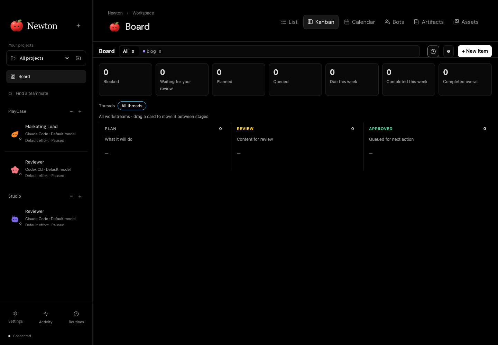
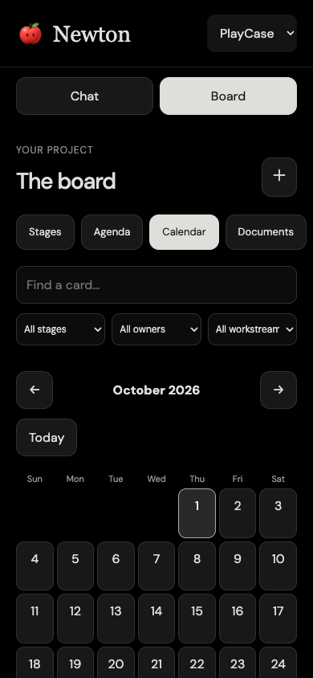

Your AI team, with a place to call home. Work with Codex and Claude in persistent terminals, bring projects together on your Board, and check in from your phone.
A GOOD IDEA STARTS SOMEWHERE.+ Say hello to Newton.
From the first brief to the finished work.
Codex CLI+Claude CodeOne home.
01 / YOUR TEAM, AT HOME
Your projects. Their own little world.
Give each teammate a role, a workspace, and a little personality. Come back to their own provider session, with the right instructions and the next task ready.
Newton / Your projects
Project cards keep your teams together. Open a teammate to return to their native terminal.
Your real terminal, ready to go.
Every teammate has a persistent Codex or Claude terminal, with native colors, slash commands, keyboard shortcuts, and image paste. Choose models and reasoning effort inside the CLI. Switch views and return to the same screen and scrollback.
One session. All the work.
Routines, Board briefs, and teammate handoffs arrive in that same session. Newton can deliver up to four automatic tasks at once, waiting when a shared workspace is busy. See the queue, cancel a task, pause incoming work, or stop a bot.
A workspace that feels like yours.
Start with project cards, give each project its own cropped icon and header image, and pin your go-to teammates. Choose your startup screen and default Board view. Each project keeps its own team, workspaces, and shared artifacts.
02 / THE WORK, IN VIEW
A shared plan. A clearer next step.
Your project Board brings briefs, owners, dates, blockers, and finished work together. Start a fresh Board or carry one over from Gravity.
List
Kanban
Calendar
Bots
Artifacts
Assets
Newton / Project Board

Plan, Review, and Approved keep active work visible. Completed work stays in your history and totals.
WORKSTREAMS & WORKFLOW
Different work. The right definition of done.
A content release, a software change, and a research brief can each have their own requirements within the same project.
Workstreams with a purpose.
Start with General, Content, Software, or Research templates. Set a name, icon, color, destination, and stage labels. Define project-wide rules, override them for individual workstreams, and archive a stream while keeping its history.
Define what done means.
Set the expected output, review requirements, approval meaning, and completion criteria. Optionally require a deliverable before review, approval before completion, and a link, file reference, or receipt as completion evidence.
Give your team the whole brief.
Create and edit cards, set owners and dates, add notes and attachments, and send a brief directly to its owner. Teammates can read workflow rules, create cards, submit review content, report blockers, and record completion. Approved content stays frozen until returned to review.
Keep the work with the plan.
Edit Markdown artifacts beside your Board. Upload, preview, rename, move, and organize images and videos in the asset library, with folders and recoverable deletion. Card attachments keep the supporting files close to the brief.
You approve the work. Approval records readiness; execution comes from an explicit brief or routine. Newton checks that required evidence is supplied, while you and your teammates verify its accuracy.
03 / A LITTLE CLOSER, WHEREVER YOU ARE
Away from your desk. Still with your team.
The phone web companion connects back to Newton on your Mac. Send a message, review the work, or check the calendar from your phone.
Keep the same conversation going.Read session messages and results, send text and images, switch teammates, and cancel queued work. Phone messages join the same bot session used on your Mac.
Take the Board with you.Browse stages, agenda, calendar, and documents. Search and filter cards, update briefs, dates and notes, attach files, edit Markdown, and configure workstreams.
Check the rhythm.Enable, pause, or run a routine once. Use a home-screen shortcut to return to your team.
EARLY COMPANION · SETUP REQUIRED
Configure Cloudflare Access and the local gateway, then use Settings → Connect phone to scan a QR code or enter a one-use code. Keep your Mac and gateway online. Remote use still needs a physical-phone check with your setup.
Chat with your team

Keep an eye on the plan
04 / BUILT TO STAY WITH YOU
More personality. Less starting over.
A rhythm for recurring work.
Schedule intervals, daily or weekly routines, or a custom cron schedule in your timezone. Edit, enable, pause, or run once from Newton—or ask a teammate to manage routines. Missed runs coalesce, and pending work won’t queue duplicate copies.
Handoffs across providers.
Let a Codex teammate delegate to Claude, or the other way around. Tasks stay inside their project, carry the brief, and return a result to the teammate who asked. You can also create bots and submit work from the Newton command-line client.
A note for the next task.
Teammates can leave durable inbox notes by name, even while someone is paused. A note adds context without starting a new task. Teammates read and acknowledge their notes when they next begin work.
Profiles that can evolve.
Update a teammate’s name, role, or instructions while its terminal is open. Changes apply at the next prompt. Teammates can also update their own saved profile through Newton’s tools.
A team with personality.
Choose from 20 illustrated characters, each with 12 expressive performances. They react to work, arrivals, completion, and moments that need attention. Newton’s apple reacts too, with a still alternative for reduced motion.
Bring your Gravity team.
Import projects, teammates, workspaces, shared artifacts, archived history, and routines into a separate Newton copy. Your original files stay in place. Imported teammates start paused and routines start disabled, ready for you to review.
Newton keeps working when you close its window, while your Mac stays awake. Routines resume after wake, with missed occurrences combined.
SMALL APP. ROOM TO GROW.
Make room for your next good idea.
A local desktop home for your team, a Board for the work, and a phone companion to stay in touch. Powered by the Codex and Claude accounts you already use.
Early release for macOS 14+, tested on Apple silicon. Requires an installed, signed-in Codex CLI or Claude Code. Bot sessions use full local file and tool access. Phone access requires additional setup. A public download isn’t available yet.